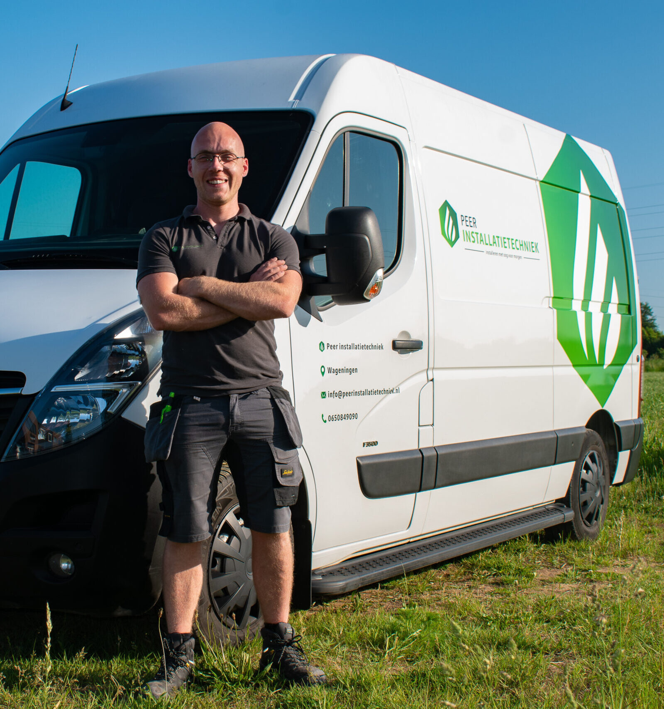
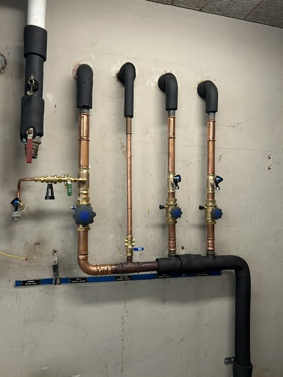
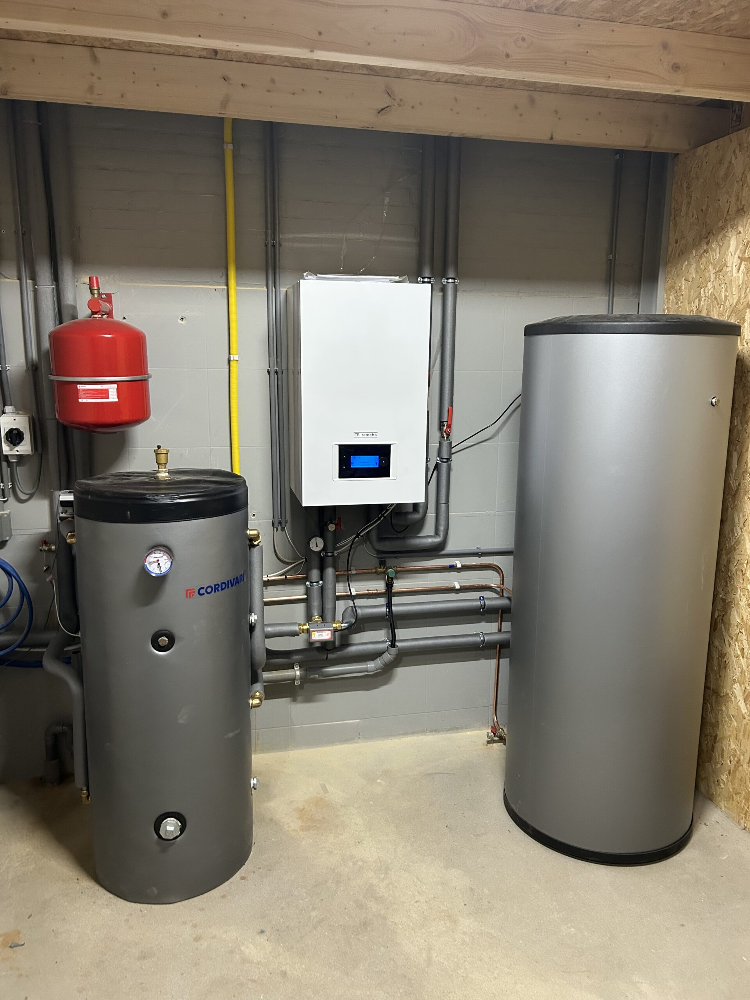
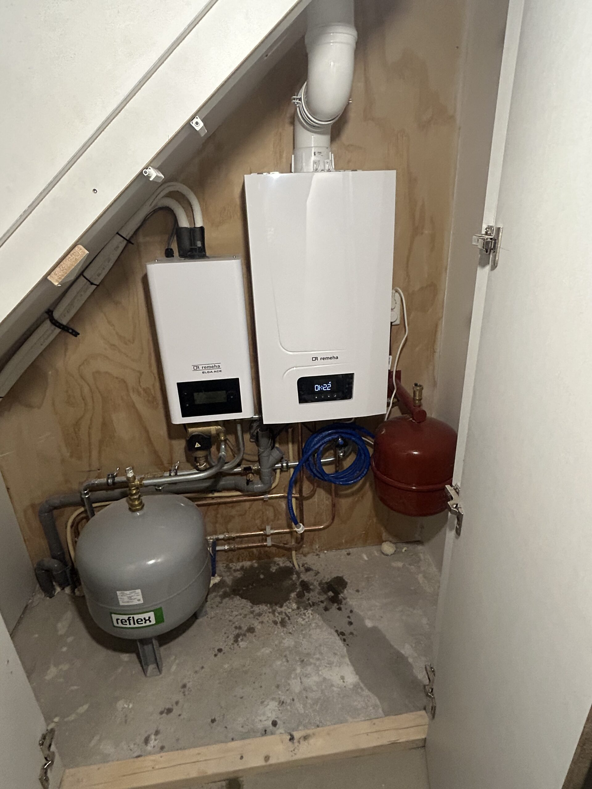
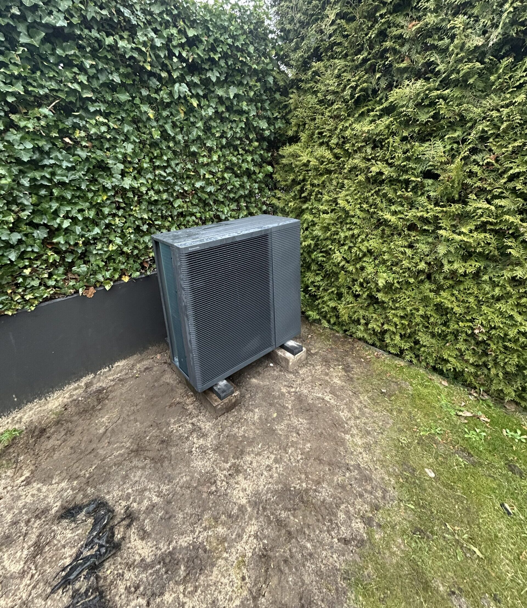
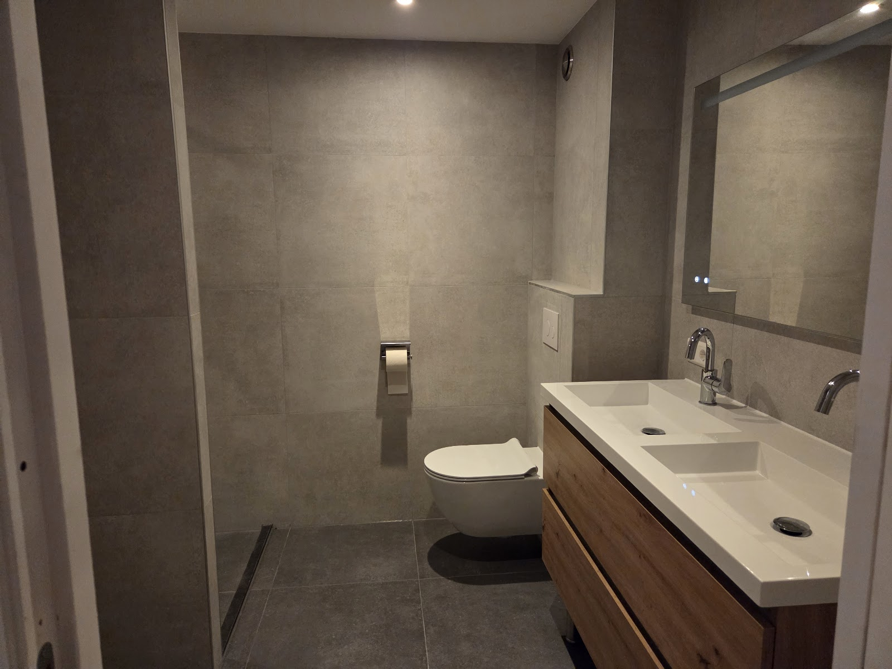
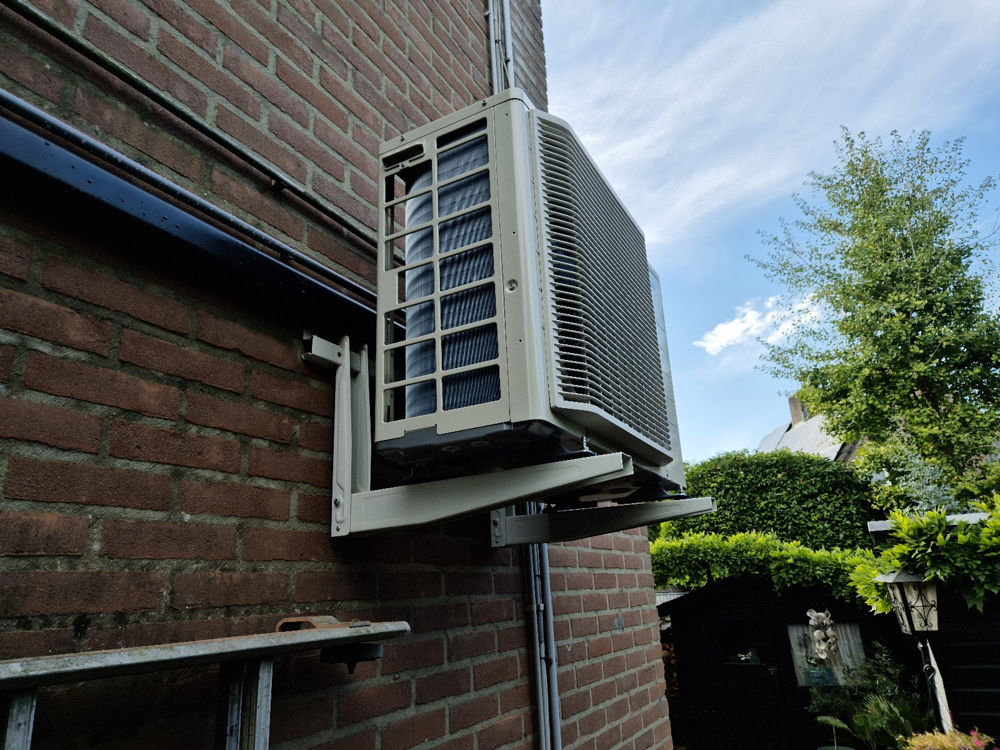
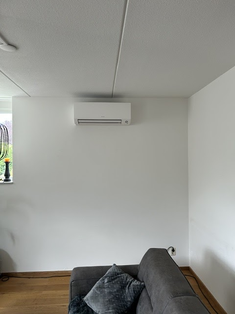
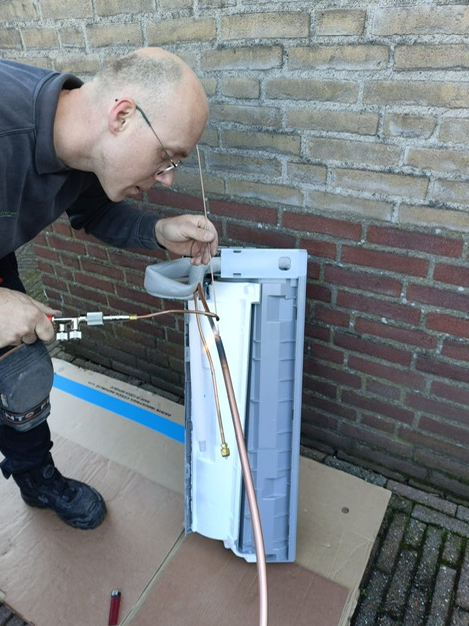

Installeren met oog voor morgen
Je installateur in Wageningen. Marvin doet het zelf.
Warmtepompen, waterleiding en riolering, centrale verwarming, airco, waterontharders, dakwerk en elektra. Eén vakman met vaste vakmensen om zich heen, en één aanspreekpunt van offerte tot oplevering.
5 sterren op Google, uit 22 reviews

Waarvoor je mij belt
Van een lekkende leiding tot een complete warmtepompinstallatie. Ook gecombineerd werk, zoals een keuken of badkamer waar water, afvoer en elektra tegelijk moeten worden aangepast. Klik een dienst open voor wat ik precies doe.

Warmtepompen Hybride en volledig elektrische warmtepompen voor energiezuinig verwarmen en warm water.
Bij een hybride warmtepomp werkt het systeem samen met je bestaande cv-ketel. Een volledig elektrische warmtepomp kan helemaal gasloos. Ik kijk naar je woning en je verwarmingssysteem, en kies wat het beste werkt.
- Hybride warmtepompen plaatsen
- Volledig elektrische warmtepompen installeren
- Lucht/water warmtepompen aansluiten
- Boilervaten aansluiten voor warm tapwater
- Buffervaten plaatsen waar nodig
- Installatie inregelen en controleren
Waterleiding, riolering en loodgieterswerk Aanleggen, vervangen en verleggen van leidingen en riolering. Ook lekkages.
Bij verbouwingen, renovaties en nieuwe installaties, maar ook voor kleiner werk: een leiding aanpassen, sanitair aansluiten of een lekkage verhelpen.
- Waterleidingen vervangen of verleggen
- Nieuwe waterleidingen aanleggen
- Riolering vervangen of herstellen
- Leidingen aanpassen bij verbouwingen
- Lekkages verhelpen
- Aansluitingen voor sanitair, keuken of wasmachine
Centrale verwarming Radiatoren, convectoren, vloerverwarming en cv-ketels.
Ik kijk naar de ruimte en de bestaande installatie, en zorg voor een nette aansluiting en een verwarming die goed werkt. Ook bij een verbouwing kan het leidingwerk worden aangepast of uitgebreid.
- Radiatoren plaatsen
- Convectoren installeren
- Vloerverwarming aanleggen
- Cv-ketels plaatsen of vervangen
- Leidingwerk aanpassen
- Installatie aansluiten en controleren
Airconditioning Leveren, installeren en onderhouden van airco's voor koelen en verwarmen.
Voor woningen, kantoren en kleine bedrijfsruimtes. Ik let op de juiste plek voor binnen- en buitenunit en op een strakke afwerking.
- Airco's leveren en installeren
- Split-airco's plaatsen
- Multisplit-airco's plaatsen
- Airco's voor koelen en verwarmen
- Binnen- en buitenunits netjes monteren
- Onderhoud en controle
Waterontharders Minder kalk op kranen, tegels en douchewanden, en in je apparaten.
Ook je wasmachine, vaatwasser en cv-installatie hebben minder last van kalk. Ik plaats de ontharder op je bestaande waterleiding en leg uit hoe je hem gebruikt en onderhoudt.
- Advies over de juiste waterontharder
- Leveren en plaatsen
- Aansluiten op de waterleiding
- Systeem instellen
- Controle op de werking
- Uitleg over gebruik en onderhoud
Dakwerkzaamheden Zinkwerk en bitumen dakbedekking voor platte daken.
Zinken dakgoten, daklijsten, dakranden en afdekkappen. Bestaande daken herstel of renoveer ik ook, netjes afgewerkt en waterdicht.
- Zinken dakgoten plaatsen
- Zinken daklijsten en dakranden
- Afdekkappen aanbrengen
- Bitumen dakbedekking branden
- Bestaande daken herstellen
- Dakisolatie waar dat mogelijk is
Elektra Extra groepen, meterkast uitbreiden en nieuwe aansluitpunten.
Overzichtelijk en veilig aangesloten. Vooral belangrijk bij een verbouwing, nieuwe apparatuur of een warmtepomp of airco die stroom nodig heeft.
- Extra groepen aanleggen
- Meterkast uitbreiden of aanpassen
- Elektra aanleggen bij verbouwingen
- Stopcontacten en aansluitpunten
- Aansluitingen voor keuken, badkamer of apparatuur
- Complete elektrawerkzaamheden
Recent opgeleverd
Drie warmtepompinstallaties uit de praktijk, met wat er is geplaatst.

Hybride installatie met Remeha Elga Ace
Complete lucht/water warmtepompinstallatie met buffervat en boiler voor ruimteverwarming en warm tapwater.

Gasloze installatie met Remeha Mercuria
Hybride warmtepompinstallatie in combinatie met een bestaande cv-ketel, voor een lager gasverbruik.

Compacte installatie met Panasonic Aquarea
Gasloos, met een geïntegreerde binnenunit en boiler voor verwarming en warm water.
En verder: badkamers, airco's, leidingwerk




Ik ben Marvin Peer
Al meer dan 15 jaar werk ik in de installatietechniek, en nog steeds met veel plezier. In die jaren ben ik een allround vakman geworden: installatiewerk, elektra en dakwerk.
Ik werk zelfstandig, met vaste vakmensen om mij heen. Zo kan ik ook grotere of gecombineerde klussen goed uitvoeren, en heb jij één duidelijk aanspreekpunt.
Ik denk met je mee, geef eerlijk advies en kom mijn afspraken na. Van installatie tot afwerking moet alles kloppen, en ik laat het netjes achter.
Ik werk vooral in Wageningen, Ede, Bennekom, Arnhem, Renkum en Heelsum. Woon je in de omgeving? Bel gerust om te bespreken wat er mogelijk is.
Wat klanten zeggen
5 sterren op Google, uit 22 reviews.
"Een absolute aanrader! Vanaf het eerste contact tot en met de installatie van de airco is alles perfect verlopen. Marvin Peer is deskundig, vriendelijk en werkt zeer professioneel. De airco hangt er strak bij en werkt uitstekend. Als je op zoek bent naar een vakkundig installatiebedrijf, zit je hier helemaal goed!"
"Complete badkamer verbouwing laten uitvoeren door installatiebedrijf Peer. Van planning tot uitvoering een betrouwbare en meedenkende partij. Alles strak en netjes afgewerkt tot in detail. Wij zijn tevreden."
"Afgelopen juni heeft Marvin bij ons al het voorbereidende installatiewerk voor de nieuwe keuken gedaan. Hij heeft de waterleidingen en afvoer verlegd, de elektra aangepast en extra aansluitingen gemaakt zodat de keuken zonder problemen geplaatst kon worden. Alles werd strak afgewerkt en goed voorbereid.
Daarnaast werkt hij netjes, denkt mee en is prettig in de omgang. Tijdens de werkzaamheden werd alles schoon en overzichtelijk gehouden en afspraken werden gewoon nagekomen. Erg tevreden over hoe alles is verlopen en zeker een aanrader voor als je een betrouwbare installateur zoekt."
"Vanaf de eerste kennismaking luisterde hij heel goed naar onze wensen en dacht hij met ons mee. Ze waren mooi op tijd en zijn vroeg begonnen. De twee airco's zijn vakkundig geplaatst en alles is netjes afgewerkt. Na afloop hebben ze alles keurig opgeruimd. We zijn erg tevreden over de service en het eindresultaat."
"Wat verfrissend om een zelfstandige en intelligente ervaren en meedenkende expert op het gebied van warmtepompen te ervaren. Hij overlegt, neemt desnoods contact op met andere experts en jawel vanaf moment 1 draait onze warmtepomp als nooit tevoren. En dat in een huis van voor 1900. Dank je wel Marvin!"
"Erg tevreden over de service van dit installatietechniek bedrijf. Ze werkten netjes en professioneel, dachten flexibel mee bij veranderingen tijdens het werk en waren altijd makkelijk te benaderen voor vragen of overleg. Fijne communicatie en betrouwbaar in afspraken. Zeker een aanrader!"
"Zeer tevreden over Peer Installatietechniek! Vanaf het eerste contact kregen we duidelijke en eerlijke informatie over de verschillende soorten airco's, waardoor we een goede keuze konden maken. De plaatsing is vervolgens zeer zorgvuldig en netjes uitgevoerd. Ook kregen we een heldere uitleg over de werking van de airco en hoe we deze het beste kunnen gebruiken. Alles werd keurig achtergelaten na afloop. Prima service en zeker een aanrader!"
Even overleggen of een offerte?
Bel of mail, of vul het formulier in. Je krijgt zo snel mogelijk antwoord. Een offerte is vrijblijvend.
06 50849090 info@peerinstallatietechniek.nlAdres
Tarthorst 557
6708 HT Wageningen
Openingstijden
- ma t/m vr
- 07:00 tot 17:00
- zaterdag
- 08:30 tot 15:00
- zondag
- gesloten